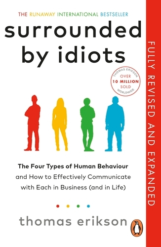

Library › Psychology & People
Surrounded by Idiots — Summary & Key Lessons

The four types of human behavior — and why everyone who isn't like you isn't actually an idiot.
📖 OPEN THE FULL INTERACTIVE BREAKDOWN →🌐 Read it in Hindi, Hinglish, Gujarati, Tamil & 22 more languages — free, with audio.
💡 The Big Idea
Based on the DISC model, Erikson sorts human behavior into four colors: Red (dominant, driven), Yellow (social, inspiring), Green (calm, stable), and Blue (analytical, precise). Communication happens on the listener's terms — the message that lands isn't the one you sent, but the one they received. Most conflict isn't malice; it's a color clash. Learn to read colors and adapt, and 'idiots' become simply... different.
🧠 The 8 Key Lessons
Lesson 1: Why Communication Fails
Chapters 1–2: Communication Happens on the Listener's Terms
The way you say something isn't what matters — what matters is how the other person receives it. Everyone filters your words through their own frames of reference: upbringing, experience, and above all, behavioral style. When someone seems like an idiot, usually they're just processing the world differently than you. The sender is responsible for adapting the message; blaming the listener is a dead end.
📖 Example: A manager says 'We should look into this soon.' The Red hears 'do it now,' the Yellow hears 'exciting new project!', the Green hears 'no rush, someday,' and the Blue hears 'prepare a detailed feasibility analysis.' One sentence — four completely different… Read the full example →
⚡ Do this: Before important conversations, ask: how does THIS person need to hear it? Adjust your delivery to their style, not your comfort.
Lesson 2: Red: The Commander
Chapter 3: Red Behavior
Reds are dominant, ambitious, fast, and results-obsessed. They love competition, decisions, and control; they say exactly what they think, interrupt freely, and treat conflict as sport. Strengths: driving force, courage, speed, getting things done. Weaknesses (as others see them): aggressive, impatient, steamrolling, terrible listeners. A Red isn't angry at you — that's just Tuesday.
📖 Example: Steve Jobs-style archetype: brutal in meetings, allergic to small talk, demands the summary in one line, decides in seconds. Team members feel bulldozed — while the Red genuinely believes the meeting went great and wonders why everyone's so slow. Read the full example →
⚡ Do this: With Reds: be brief, be direct, lead with the result, never waffle. Stand your ground — they respect pushback far more than submission.
Lesson 3: Yellow: The Enthusiast
Chapter 4: Yellow Behavior
Yellows are social, optimistic, creative, and persuasive — the life of every party. They talk (a lot), inspire, generate endless ideas, and make work fun. Strengths: energy, charm, vision, lifting the room. Weaknesses: poor listeners, chronically late, allergic to details and follow-through, prone to talking over everyone, and their many ideas rarely all become reality.
📖 Example: The colleague who returns from every conference 'completely changed,' launches three initiatives with total conviction, charms the whole office — and by next month has forgotten all three because five new ideas arrived. Documentation? 'I'll do it later.'… Read the full example →
⚡ Do this: With Yellows: give attention and enthusiasm, let them talk, but pin them down — write decisions down, set deadlines, and follow up in writing.
Lesson 4: Green: The Stabilizer
Chapter 5: Green Behavior
Greens — the most common type — are calm, patient, loyal, and genuinely kind team players. They keep organizations running, help everyone, and avoid conflict at almost any cost. Strengths: reliability, empathy, listening, steady execution. Weaknesses: fear change, can't say no (then quietly resent it), hide real opinions, and become passive resisters — saying 'fine' while meaning anything but.
📖 Example: In a reorg announcement, the Green nods, says nothing, and appears fully on board. Weeks later, nothing has changed in how they work — silent, stubborn resistance. Nobody knew they objected, because they never said it out loud. The 'yes' in the meeting was… Read the full example →
⚡ Do this: With Greens: create safety, introduce change gradually, and ask direct questions in private — 'What do YOU honestly think?' Then wait patiently for the real answer.
Lesson 5: Blue: The Analyst
Chapter 6: Blue Behavior
Blues are precise, logical, quality-driven perfectionists. They read the manual, check the facts (three times), follow rules, and speak only when they have something correct to say. Strengths: accuracy, depth, preparation, world-class quality control. Weaknesses: cold-seeming, pessimistic-sounding, paralyzed by perfectionism, and critical — a Blue will find the one error in your 60-page report and lead with it.
📖 Example: Erikson describes a Blue neighbor who, before buying a lawnmower, researched every model for months, built comparison spreadsheets, interviewed owners — and delivered a flawless purchase a full season later. The Yellow neighbor bought one in ten minutes and… Read the full example →
⚡ Do this: With Blues: come prepared, bring data, skip the hype, answer their questions precisely, and never say 'trust me' — show the evidence instead.
Lesson 6: Colors in Combination & Conflict
Chapters 7–9: Adaptation and Group Dynamics
Most people are a combination of two colors; pure single-color people are rare (and intense). Opposites clash hardest: Red vs. Green (steamroller meets silent wall) and Yellow vs. Blue (confetti cannon meets fact-checker). Task-focused (Red/Blue) vs. people-focused (Yellow/Green) is another fault line, as is fast (Red/Yellow) vs. deliberate (Green/Blue). A great team needs all four colors — which is also why great teams argue.
📖 Example: Project meeting: Red decides in minute one, Yellow pitches an unrelated brilliant idea, Blue demands the risk analysis nobody prepared, Green quietly hopes it all blows over. Each leaves convinced they were surrounded by idiots. All four were doing their job. Read the full example →
⚡ Do this: Map your team's colors. Before friction, ask: is this a personality clash or a color clash? Then translate your message into their color.
Lesson 7: Feedback, Stress & Body Language by Color
Chapters 10–14: Adaptation in Practice
Each color needs different handling under pressure. Feedback: Reds want it blunt and instant; Yellows need praise publicly and criticism gently; Greens need warmth, privacy, and reassurance; Blues want specific, factual critique (they already know their flaws). Stress triggers differ too — Reds stress without control, Yellows without attention, Greens without stability, Blues without information. Written communication is safest for Blues, dangerous with Greens (too cold), and often unread by Yellows.
📖 Example: Same critique, four ways: To Red: 'This part failed. Fix it by Friday.' To Yellow: 'You're brilliant at X — imagine how great Y could be with a tweak!' To Green: 'You're doing well overall; can we look at one thing together?' To Blue: 'Section 3.2 has an… Read the full example →
⚡ Do this: Before your next piece of feedback, write it four ways. Deliver the version matching the receiver's color — and watch resistance melt.
Lesson 8: Spotting Colors Fast: The Field Guide
Chapters 7, 15: Reading People in the Wild
You rarely get a personality test before a meeting — so learn the visible tells. VOICE & PACE: Reds talk fast, loud, and in commands ('bottom line?'); Yellows talk fast, loud, and in stories (about themselves, delightfully); Greens talk softly, slowly, and mostly listen; Blues talk precisely, sparingly, and only after thinking. BODY LANGUAGE: Reds lean in and hold hard eye contact, invading space; Yellows touch, gesture theatrically, and pull everyone close; Greens keep relaxed, closed, unhurried postures; Blues keep literal distance, minimal gestures, unreadable faces. WORKSPACE forensics: the Red's desk shows trophies and to-do triumphs; the Yellow's is a joyful mess of post-its and photos; the Green's has family pictures and comfortable clutter; the Blue's is immaculate, labeled, and system-perfect. EMAIL style: Reds send three-word answers; Yellows send exclamation marks and forget attachments; Greens send warm, hedged paragraphs; Blues send numbered lists with the attachment named correctly. Ten minutes of observation beats an hour of assumption — and misreads cost less when you keep watching for correction signals.
📖 Example: Erikson's airport test: watch four strangers whose flight is cancelled. The Red marches to the counter demanding solutions ('rebook me NOW — and get your supervisor'). The Yellow turns the queue into a party, telling cancellation war stories to new best… Read the full example →
⚡ Do this: Practice covert diagnosis this week: in every meeting, guess each participant's primary color within ten minutes from voice, posture, and email style — then verify against how they respond to deadlines and details. Track your hit rate; it climbs shockingly fast.
✅ 5-Step Action Plan
- Identify your own primary + secondary color (be honest about weaknesses).
- Color-map the 5 people you interact with most.
- For one week, deliver every message in the LISTENER's color.
- In conflict, ask 'color clash or real disagreement?' before reacting.
- Recruit your opposite color for your next project — cover your blind spots.
⚠️ When This Doesn't Work
Personality typologies like DISC feel profound and are dangerously sticky — they label people, and labels become excuses: 'I'm a red, I can't do empathy.' The Mars Climate Orbiter was lost because two teams spoke different 'types' — one in metric units, one in imperial — and neither checked the other's language; the $327 million crash was a communication failure dressed as a technical one. Use the framework to translate, never to judge, and always verify the actual message, not the assumed one.
💀 The Graveyard Proves It
🛰️ NASA Mars Climate Orbiter — The $327M Metric Mix-Up. Burn: $327.6M spacecraft. Read the full case study →
💬 Best Quotes from Surrounded by Idiots
- “Communication happens on the listener's terms.”
- “There is no good or bad profile — only differences.”
- “Everything you say to a person is filtered through their frames of reference.”
Interactive version: mark lessons as read, listen in your language, share quote cards.